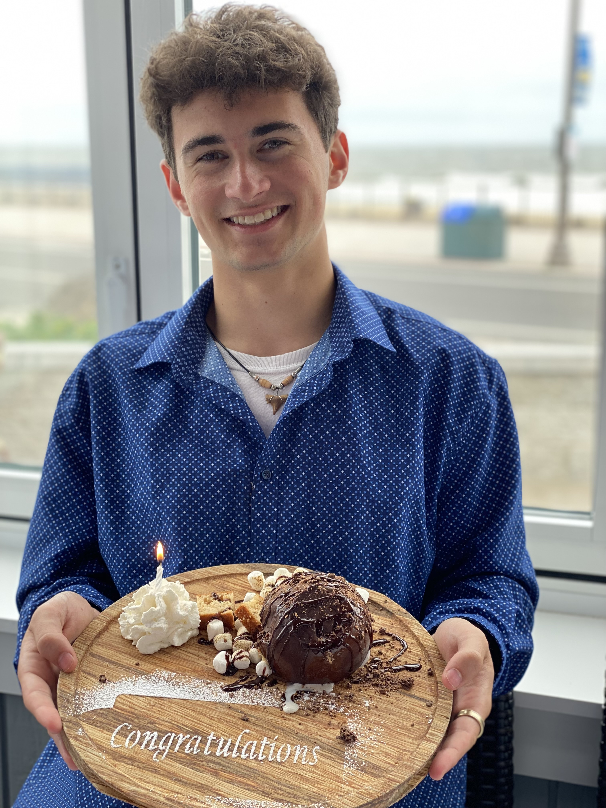

Welcome!
Hello! My name is Andrew Visconti, and I am currently a sophomore at Cornell University stuyding Informaiton Science with a concentration in Data Scinece. I am also interested in learning more about artificial intelligence and machine learning.
A little bit about me:
- I am currently 19 years old
- I am from Freehold, New Jersey
- I am very interested in Machine Learning, AI, Software Development, and Data Science
- I currently attend Cornell Universtiy
- I love going thrifting with my friends
- My favorite sport to play is Pickleball
- I Fenced for 4 years and I have ratings in both Foil and Epee
- I have been a Lifegaurd for over 4 years and I am CPR/AED, and First Aid Certified
Cornell University, Ithaca NY
I am currently a Sophomore at Cornell University enrolled in the College of Agriculture and Life Sciences stuyding Information Science with concentrations in Data Science and User Experience (UX). I plan to obtain a minor in Business and Artificial Intelligence.

Here is a list of some of the main college courses I have taken or am currently enrolled in that closely relate to my field of study:
- Introductory Design and Programming for the Web
- This course covers the basics of web design and development, focusing on HTML, CSS, and JavaScript to build responsive websites. Students will learn foundational coding principles while developing user-centered design skills.
- Networks
- This course introduces the fundamental concepts of computer networks, including protocols, topologies, and data communication. Topics include network architecture, the internet, and the basics of network security.
- Intoduction to Data Science
- This course provides an overview of data science, focusing on data analysis, visualization, and the application of statistical methods. Students will explore key tools such as Python and R for analyzing and drawing insights from large datasets.
- Linear Algebra for Data Science
- This course focuses on the essential concepts of linear algebra used in data science, such as matrices, vectors, and eigenvalues. It emphasizes practical applications in machine learning and data manipulation.
- General Physics
- This course covers fundamental physics concepts, including mechanics, energy, and waves. Students will engage in problem-solving and experiments to understand the principles of the physical world.
- Data 101
- This course introduces the basics of data management, data ethics, and interpretation of data using the R statistical programming language. Students will gain a foundational understanding of how data is collected, processed, and used in decision-making.
- Computers, Math, & Science
- This course teaches students how to be familiar with the MATLAB programming language. In this course, students learn about vectors and arrays, and how the they can be used to solve real-world problems with datasets.
- Statistics
- This course covers the foundational concepts of probability, distributions, and inferential statistics. Students will learn how to interpret data and make informed decisions using statistical methods.
- Introduction to Programming Python
- This course teaches the basics of programming using Python, covering syntax, data structures, and algorithms. Students will learn to develop and implement simple programs while solving computational problems.